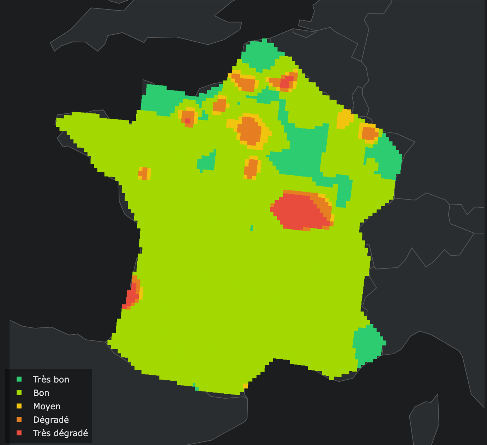

Interroger des DataFrames et des fichiers avec du SQL, sans serveur à installer.
exercices/exercice.ipynb.envAujourd'hui : une fois la donnée collectée, comment l'interroger efficacement — même quand elle devient volumineuse ?
Deux outils complémentaires, pas concurrents.
On mélangera souvent les deux dans un même notebook : DuckDB pour agréger/joindre, pandas pour la suite du traitement.
Des briques simples, ajoutées une à une : SELECT, WHERE, ORDER BY, GROUP BY, JOIN.
Le support de toutes nos requêtes : des lignes et des colonnes, comme un tableau Excel — mais typé.
id nom pays altitude_km masse_kg mission_id
1 Sentinel-1A EU 693 2300 1
2 Sentinel-2A EU 786 1140 2
3 Sentinel-2B EU 786 1140 2
4 Sentinel-3A EU 814 1250 3
5 SPOT-7 FR 694 714 4
6 Landsat-9 US 705 2711 5
7 Terra US 705 4864 6
8 Hubble US 540 11110 NULLid identifie chaque ligne de façon unique (clé primaire)NULL = valeur absente (Hubble n'est rattaché à aucune mission) — ce n'est ni 0 ni une chaîne videCette table satellites (8 lignes) sera notre fil rouge pour tous les exemples qui suivent.
On décrit ce qu'on veut obtenir, pas comment le calculer.
SELECT colonnes à afficher
FROM table de départ
WHERE filtre sur les lignes
GROUP BY regroupement
HAVING filtre sur les groupes
ORDER BY tri
LIMIT nombre de lignes max;SELECT et FROM sont obligatoiresselect = SELECT (on les met en majuscules par convention); termine la requêteEn français : « Je veux ces colonnes SELECT dans cette table FROM, seulement les lignes qui… WHERE, regroupées par… GROUP BY, en ne gardant que les groupes qui… HAVING, triés par… ORDER BY, les n premiers LIMIT. »
On va construire ce squelette clause par clause, en partant de la requête la plus simple possible.
La requête la plus simple : lire une table. AS donne un nom aux colonnes calculées.
SELECT * -- toutes les colonnes
FROM satellites;
SELECT nom, pays -- seulement certaines
FROM satellites;
SELECT nom,
altitude_km * 1000 AS altitude_m
FROM satellites
LIMIT 3;nom altitude_m
Sentinel-1A 693000
Sentinel-2A 786000
Sentinel-2B 786000En français : « Donne-moi le nom et le pays SELECT de tous les satellites FROM » · « …l'altitude × 1000, que j'appelle altitude_m AS, les 3 premiers seulement LIMIT. »
FROM : de quelle table on part ; SELECT : quelles colonnes on garde — * = toutes+ - * / et fonctions (ROUND(), UPPER()…) ; SELECT lit, il ne modifie jamais la tableOn ne garde que les lignes où la condition est vraie. Les textes s'écrivent entre apostrophes simples : 'US'.
SELECT nom, pays, altitude_km
FROM satellites
WHERE altitude_km > 700;nom pays altitude_km
Sentinel-2A EU 786
Sentinel-2B EU 786
Sentinel-3A EU 814
Landsat-9 US 705
Terra US 705En français : « Donne-moi le nom, le pays et l'altitude SELECT des satellites FROM dont l'altitude dépasse 700 km WHERE. »
| Opérateur | Sens | Exemple |
|---|---|---|
= <> | égal / différent (un seul =, pas ==) | pays = 'US' |
< <= > >= | comparaisons | masse_kg >= 2000 |
AND, OR, NOT, IN, BETWEEN, LIKE, IS NULL.
WHERE pays = 'US' AND altitude_km >= 600
WHERE pays = 'FR' OR pays = 'EU'
WHERE pays IN ('FR', 'EU')
WHERE altitude_km BETWEEN 600 AND 750
WHERE mission_id IS NULL
WHERE nom LIKE 'Sentinel%'| Mot-clé | Rôle |
|---|---|
AND / OR | les deux / l'une des conditions |
IN (…) | égal à l'une des valeurs de la liste |
BETWEEN a AND b | borne basse et haute incluses |
En français : « américain et au-dessus de 600 km AND · français ou européen OR · parmi cette liste de pays IN · entre 600 et 750 km BETWEEN · dont le nom commence par Sentinel LIKE · sans mission renseignée IS NULL · le contraire de… NOT »
⚠️ = NULL ne marche jamais : on écrit IS NULL. Mélangez AND/OR avec des parenthèses.
Trier le résultat, puis n'en garder qu'une partie.
SELECT nom, masse_kg
FROM satellites
ORDER BY masse_kg DESC
LIMIT 3;nom masse_kg
Hubble 11110
Terra 4864
Landsat-9 2711En français : « Donne-moi le nom et la masse des satellites FROM, classés du plus lourd au plus léger ORDER BY, et garde les 3 premiers LIMIT. »
ORDER BY col : tri croissant (ASC, par défaut) ou DESC (décroissant)ORDER BY pays ASC, masse_kg DESCLIMIT n : garde les n premières lignes après le tri — d'où le « top 3 »ORDER BY, l'ordre des lignes n'est pas garantiCOUNT, SUM, AVG, MIN, MAX.
SELECT COUNT(*) AS nb,
ROUND(AVG(altitude_km), 1) AS alt_moy,
MIN(altitude_km) AS alt_min,
MAX(masse_kg) AS masse_max
FROM satellites;nb alt_moy alt_min masse_max
8 715.4 540 11110En français : « Combien de satellites COUNT(*), quelle altitude moyenne AVG, quelle altitude minimale MIN, quelle masse maximale MAX — pour toute la table ? »
COUNT compte, SUM/AVG somment/moyennent, MIN/MAX donnent les extrêmes. Elles réduisent toutes les lignes à une seule et ignorent les NULL (sauf COUNT(*)).
Même agrégats, mais calculés séparément pour chaque valeur d'une colonne.
SELECT pays,
COUNT(*) AS nb,
ROUND(AVG(altitude_km), 1) AS alt_moy
FROM satellites
GROUP BY pays
ORDER BY nb DESC;pays nb alt_moy
EU 4 769.8
US 3 650.0
FR 1 694.0En français : « Pour chaque pays GROUP BY pays, compte les satellites et calcule leur altitude moyenne, puis classe les pays du plus au moins fourni ORDER BY nb DESC. » — « pour chaque… » = GROUP BY.
GROUP BY pays : crée un paquet de lignes par pays, puis les agrégats sont calculés dans chaque paquetSELECT est soit dans le GROUP BY, soit à l'intérieur d'une fonction d'agrégationdf.groupby('pays').agg(...)Deux filtres, à deux moments différents.
SELECT pays, COUNT(*) AS nb
FROM satellites
WHERE altitude_km > 600
GROUP BY pays
HAVING COUNT(*) > 1
ORDER BY nb DESC;pays nb
EU 4
US 2En français : « Parmi les satellites au-dessus de 600 km WHERE, compte-les par pays GROUP BY, ne garde que les pays qui en ont plus d'un HAVING, classés par nombre décroissant ORDER BY. »
WHERE altitude_km > 600 : s'applique aux lignes, avant le regroupement (Hubble, à 540 km, disparaît)HAVING COUNT(*) > 1 : s'applique aux groupes, après l'agrégation (la France, avec 1 seul satellite, disparaît)COUNT(*) dans un WHERE : l'agrégat n'existe pas encore à cette étapeOn évite de répéter l'information : chaque fait est stocké une seule fois.
id nom mission_id
1 Sentinel-1A 1
5 SPOT-7 4
6 Landsat-9 5
8 Hubble NULLid nom_mission agence
1 Copernicus S1 ESA
2 Copernicus S2 ESA
3 Copernicus S3 ESA
4 SPOT CNES
5 Landsat NASA
6 EOS NASAsatellites.mission_id pointe vers missions.id : c'est une clé étrangèremissions, pas recopié sur chaque satelliteJOIN) reconstitue la table large quand on en a besoin — l'équivalent SQL de pd.mergeON dit quelle colonne de gauche correspond à quelle colonne de droite.
SELECT s.nom, m.nom_mission, m.agence
FROM satellites AS s
INNER JOIN missions AS m
ON s.mission_id = m.id
WHERE s.pays = 'US';nom nom_mission agence
Landsat-9 Landsat NASA
Terra EOS NASAEn français : « Pour chaque satellite américain américain WHERE, donne son nom, ainsi que le nom et l'agence de sa mission JOIN en rapprochant mission_id de l'id de la mission ON. »
s et m sont des alias de table : ils évitent d'écrire satellites. partout et lèvent les ambiguïtés (s.id vs m.id)ON s.mission_id = m.id : la condition d'appariement — une ligne est produite pour chaque couple qui la satisfaitmission_id = NULL) ne correspond à rien : il disparaît du résultatMême requête, mais on ne perd aucun satellite.
SELECT s.nom, m.nom_mission, m.agence
FROM satellites AS s
LEFT JOIN missions AS m
ON s.mission_id = m.id
WHERE s.pays = 'US';nom nom_mission agence
Landsat-9 Landsat NASA
Terra EOS NASA
Hubble NULL NULLEn français : « Pareil, mais garde le satellite même s'il n'a pas de mission LEFT JOIN — les champs de la mission restent vides (NULL). »
| Type | Garde… |
|---|---|
INNER JOIN | uniquement les lignes qui ont une correspondance des deux côtés |
LEFT JOIN | toutes les lignes de gauche ; NULL côté droit si pas de correspondance |
Même vocabulaire que pd.merge(how='inner' / 'left') en séance 1.
| Ce que vous dites | Ce que vous écrivez |
|---|---|
| « combien de… » | COUNT(*) |
| « la moyenne / la somme / le plus grand… » | AVG · SUM · MAX / MIN |
| « seulement ceux qui… », « dont… » | WHERE (sur les lignes) |
| « pour chaque… », « par… » | GROUP BY |
| « seulement les groupes qui… » | HAVING (sur les groupes) |
| « du plus… au moins… », « trié par… » | ORDER BY … DESC / ASC |
| « en rapprochant / avec les infos de… » | JOIN … ON … |
| « même s'il n'y a pas de correspondance » | LEFT JOIN |
Méthode : 1) écrivez la phrase (« pour chaque pays, combien de satellites au-dessus de 600 km ? »), 2) repérez les mots-clés du dictionnaire, 3) remplissez le squelette SELECT / FROM / WHERE / GROUP BY…
Chaque clause fait un travail précis, dans l'ordre vu plus haut.
SELECT m.agence, COUNT(*) AS nb_sat -- 5. colonnes de sortie
FROM satellites s -- 1. table de départ
JOIN missions m ON s.mission_id = m.id -- ...enrichie par jointure
WHERE s.altitude_km > 600 -- 2. filtre sur les lignes
GROUP BY m.agence -- 3. un groupe par agence
HAVING COUNT(*) >= 2 -- 4. filtre sur les groupes
ORDER BY nb_sat DESC -- 6. tri
LIMIT 5; -- 7. coupeagence nb_sat
ESA 4
NASA 2En français : « Pour chaque agence GROUP BY, compte les satellites situés au-dessus de 600 km WHERE ; garde celles qui en ont au moins 2 HAVING ; classe-les par nombre décroissant ORDER BY, 5 au maximum LIMIT. »
À retenir : SELECT choisit, WHERE filtre les lignes, GROUP BY résume, HAVING filtre les résumés, JOIN relie les tables, ORDER BY / LIMIT mettent en forme. C'est exactement ce que vous utiliserez en TP.
Une base analytique qui tient dans une simple librairie Python.
DuckDB tourne en process (pas de serveur à lancer) et référence vos variables Python sans les recopier.
import duckdb
resultat = duckdb.sql(
"SELECT pays, COUNT(*) FROM df GROUP BY pays"
).df()df est le DataFrame pandas existant en mémoire — aucune étape d'import explicite n'est nécessaire.
duckdb.sql("""
SELECT region, AVG(population)
FROM read_parquet('villes_large.parquet')
GROUP BY region
""").df()DuckDB lit le fichier lui-même, colonne par colonne — utile pour des fichiers bien plus gros que la RAM disponible.
Illustration sur quelques millions de lignes — à mesurer vous-mêmes en TP, le résultat dépend de votre machine.
groupbyGROUP BY| Outil | Déploiement | Volume typique |
|---|---|---|
| DuckDB | In-process, sur votre machine | Jusqu'à quelques dizaines de Go |
| Spark | Cluster distribué | To/Po, plusieurs machines |
| BigQuery | Service cloud managé | To/Po, facturé à la requête |
Pour ce module et la majorité des projets M1, DuckDB suffit largement — pas besoin d'infrastructure distribuée.
Place au TP : maintenant, un cas concret — comme dans un vrai projet de data engineering.
Une mission comme on en rencontre en entreprise : des données partielles, un besoin à satisfaire.
Vous êtes data engineer dans une société qui conseille collectivités et assureurs sur les risques environnementaux.
Question métier : « Comment répond-on à partir de données incomplètes ? » — c'est le cœur de beaucoup de projets spatiaux.
Voici ce que vous aurez produit à la fin du TP, à partir des seuls relevés de capteurs.

air_quality_index de la baseOn retrouve les grandes agglomérations en orange/rouge : c'est un bon test de cohérence du résultat.
Une base qualite_air.duckdb : 4 tables, une par réseau de capteurs.
| Table | Mesures | Colonne d'identifiant |
|---|---|---|
releves_meteo | température, humidité, pluie, vent | id_station_meteo |
releves_qualite_air_urbain | NO2, PM10, PM2.5 | code_capteur_aq |
releves_ozone_rural | O3 | ref_station_o3 |
releves_citoyen_pm | PM10 (capteurs low-cost) | capteur_uid_pm |
Comme dans la vraie vie : un identifiant qui ne s'appelle jamais pareil, des colonnes inutiles (fabricant, n° de série…), des valeurs manquantes et des mesures aberrantes. Le premier travail est de fiabiliser avant de calculer quoi que ce soit.
Cinq grandes étapes, chacune appuyée sur une brique SQL vue aujourd'hui.
WHERE … BETWEEN, filtrer les capteurs pertinentsUNION ALL des réseaux qui mesurent la même chose (PM10)CROSS JOIN + GROUP BYBonus pour les plus rapides : niveau de confiance de chaque estimation, et « donnée non disponible » quand elle est trop incertaine.
Le concept central du TP : une moyenne pondérée par la proximité.
-- toutes les paires (maille, capteur)
FROM maille m CROSS JOIN capteurs c
-- un résultat par maille
GROUP BY m.id_maille
-- la moyenne pondérée
SUM(w * valeur) / SUM(w)Ça fait plusieurs millions de lignes à agréger — exactement le cas où DuckDB, vu plus haut, fait la différence.
Trois règles simples, inspirées des indices officiels de qualité de l'air.
Les seuils exacts sont documentés dans generation_base_donnees.ipynb : à vous de les transformer en fonction.
Trois heures : un échauffement, le cas concret, puis le bonus.
exercices/generation_base_donnees.ipynb une fois (quelques secondes) : il crée data/qualite_air.duckdbexercices/exercice.ipynb et remplacez les <TODO> au fil des cellulesduckdb -ui data/qualite_air.duckdb — procédure Mac/Windows en tête du notebook